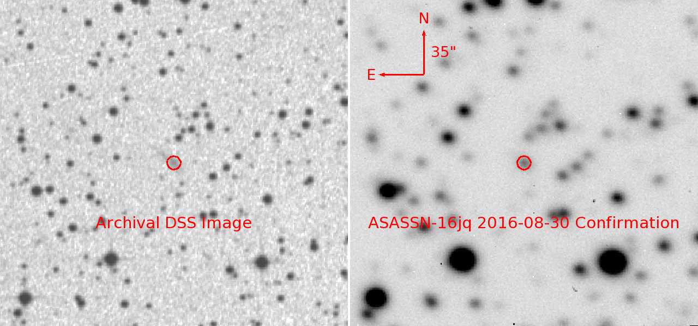
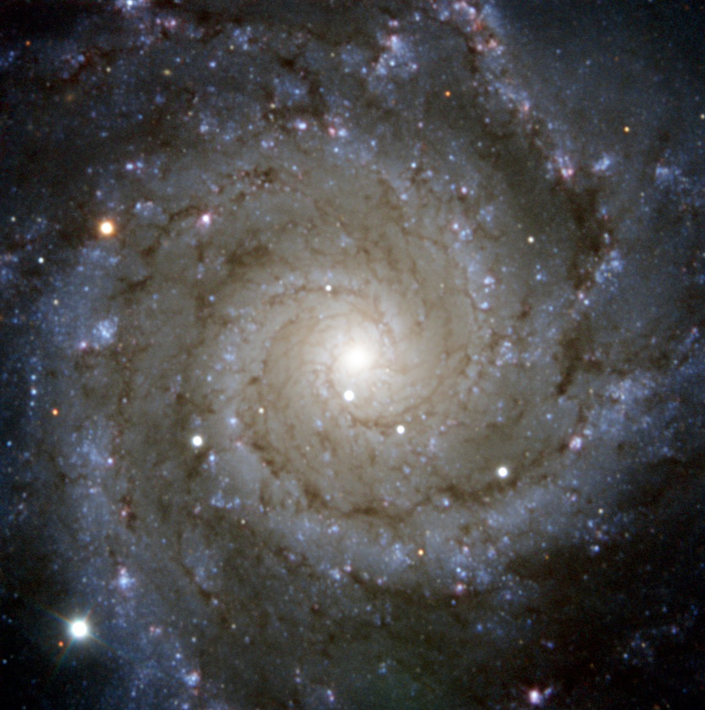

In this lab you will get your hands on REAL supernovae spectra from some of the world's largest and most powerful telescopes and instruments! Many of these were discovered by QUB researchers!
You'll also get the chance to calculate the Universe's expansion rate, and get the actual 2011 Nobel Prize measurements that showed that this expansion is actually accelerating!
Before and after supernovae discovery images.
The brightest star at the bottom left of this image is actually a supernova called SN2013ej. This supernova image was caught by the PESSTO survey, in which QUB plays a leading role. Credit ESO/PESSTO/S. Smartt (QUB).
